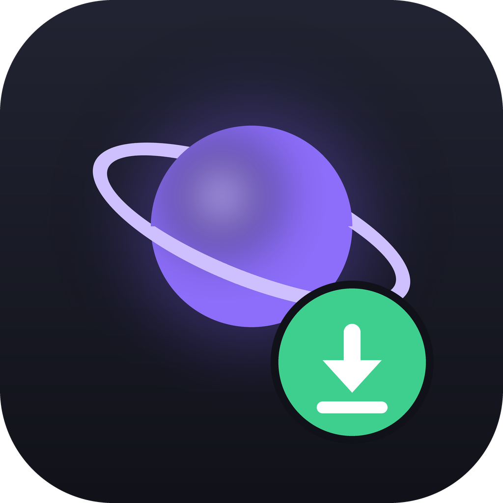
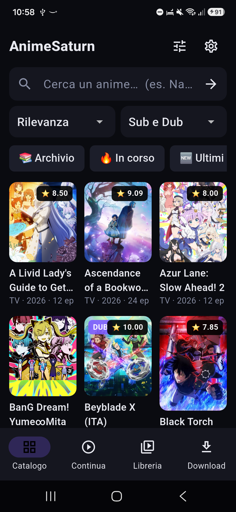
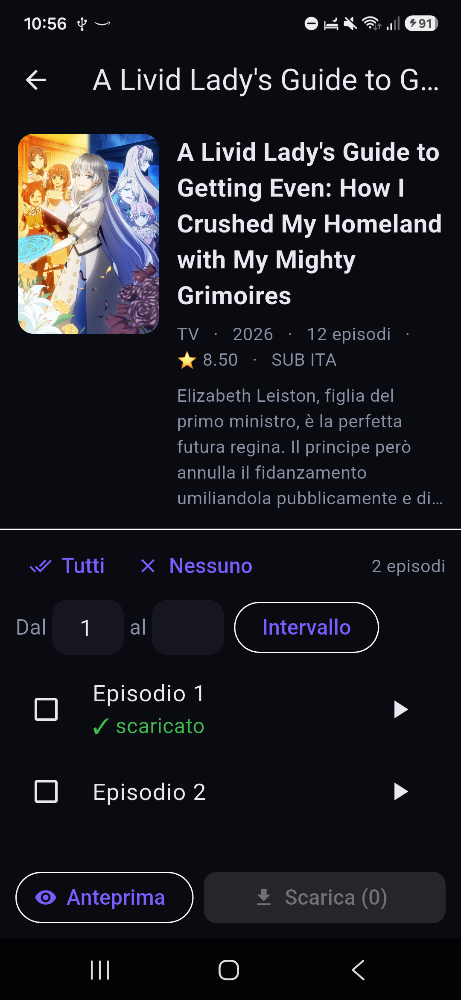
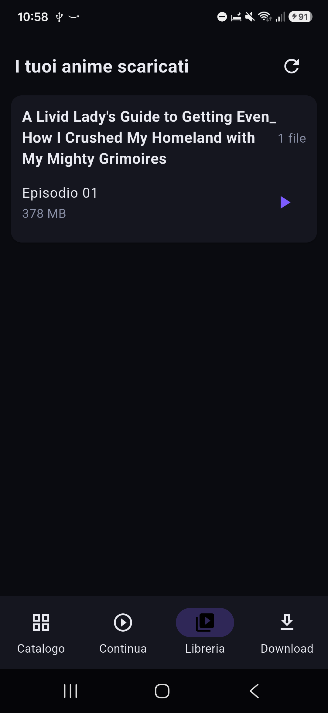

App Android non ufficiale per AnimeSaturn: streaming integrato, download per vederli offline e ripresa esatta da dove eri rimasto — anche cambiando dispositivo.
⬇ Scarica l'ultima versioneGratis e senza pubblicità · Android 7.0 o superiore · anche Android TV e Fire TV



| Dispositivo | File |
|---|---|
| 📱 Telefono o tablet recente | telefono-arm64-v8a |
| 📱 Telefono molto vecchio (32 bit) | telefono-armeabi-v7a |
| 📱 Non so quale scegliere | telefono-universal |
| 📺 Android TV / TV box | TV-arm64-v8a |
| 🔥 Fire TV / Fire Stick | TV-firestick-universal |
Non arrivando da uno store, l'app non si aggiorna da sola. Con
Obtainium però sì: installalo, aggiungi l'indirizzo
https://github.com/piciolo/animesaturn-apk- e riceverai ogni nuova versione come da uno store.
Esiste la versione per Windows, che condivide lo stesso account: inizi un episodio sul PC e lo riprendi dal telefono. Scarica l'app per Windows.